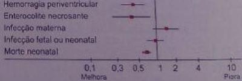

Questão 1 · Trabalho de parto prematuro TPP · Obstetrícia · 4000185674Assinale a alternativa que não representa um fator de risco para parto prematuro.
A Candidíase vaginal
B Gestação múltipla
C Infecção intra-amniótica
D Colo uterino curto
E Polidrâmnio
Questão 2 · Trabalho de parto prematuro TPP · Obstetrícia · 4000183723A respeito do trabalho de parto prematuro (TPP), assinale a alternativa correta.
A Para o diagnóstico de TPP é suficiente a identificação de contrações uterinas regulares, com intervalo de 5 minutos ou menos entre cada uma, depois de 22 semanas de gestação e antes de 37 semanas de gestação.
B Gestantes assintomáticas e com medida do colo uterino realizada com 24 semanas de gestação menor ou igual a 25 mm possuem maior risco de parto prematuro. Essas pacientes se beneficiam da progesterona micronizada na dose de 200 mg via vaginal, à noite.
C Ainda são controversos os benefícios do uso de sulfato de magnésio como medida de neuroproteção fetal para mulheres em trabalho de parto prematuro com idade gestacional entre 24 e 31 semanas e 6 dias de gestação.
D O uso de corticoide é indicado para pacientes entre 24 e 34 semanas de gestação, com alta probabilidade de parto prematuro dentro de 7 dias, e a droga de primeira escolha é a dexametasona 6 mg intramuscular de 12 em 12 horas por 48 horas (4 doses).
E Os antibióticos devem ser utilizados em gestantes em trabalho de parto prematuro com risco iminente de parto apenas nos casos em que houver diagnóstico de corioamnionite.
Questão 3 · Trabalho de parto prematuro TPP · Obstetrícia · 4000183446Em qual das alternativas abaixo está indicado iniciar medida medicamentosas para prevenção do trabalho de parto prematuro e a medicação recomendada?
A Parto prematuro anterior espontâneo - prostaglandina.
B Dosagem de fibronectina fetal positiva após a 22ª semana – prostaciclina.
C Ultrassonografia sugerindo colo de 3,0 cm de comprimento – prostaglandina.
D Ultrassonografia sugerindo colo de 2,0 cm de comprimento – progesterona.
E Toque vaginal sugerindo colo de 2,5 cm de comprimento – progesterona.
Questão 4 · Trabalho de parto prematuro TPP · Obstetrícia · 4000183346São tocolíticos utilizados para prolongar a gestação: I. β 2-agonistas. II. Inibidores da ciclo-oxigenase. III. Sulfato de magnésio. Quais estão corretos?
A Apenas I e II.
B Apenas I e III.
C Apenas II e III.
D I, II e III.
Questão 5 · Trabalho de parto prematuro TPP · Distúrbios hipertensivos na gestação DHEG · Obstetrícia · 4000183149Paciente 30 anos, 3ª gestação, 14 semanas. Na 1ª gestação teve pré-eclâmpsia com 31 semanas, parto cesárea de emergência. Na 2ª gestação entrou em trabalho de parto prematuro, evoluindo para parto normal com 32 semanas. Mesmo parceiro. Qual é a orientações no pré-natal?
A Ácido fólico, sulfato ferroso e progesterona.
B Ácido acetilsalicílico, progesterona e sulfato ferroso.
C Ácido fólico, heparina de baixo peso molecular e progesterona.
D Sulfato ferroso, ácido acetilsalicílico e heparina de baixo peso molecular.
Questão 6 · Trabalho de parto prematuro TPP · Rotura prematura de membranas ovulares RPM · Obstetrícia · 4000183141Primigesta de 27 semanas é internada com o diagnóstico de rotura das membranas. Na internação recebeu ciclo de corticoide (betametasona) e foi pesquisada a presença de Estreptococo beta hemolítico. Exames laboratoriais: Hb 11,3; Ht 34%; leucograma 8700 sem desvio; PCR 4,3. Ultrassonogra a: feto único em apresentação pélvica, placenta corporal anterior grau 0, ILA 5,6 cm (normal de 8 a 18 cm), peso estimado 950g (entre o percentil 10 e 50). No 3° dia de internação, paciente evolui com contrações uterinas ritmadas (3 em 10 minutos) e dolorosas. Qual é a melhor conduta?
A Prescrever dose de ataque de ampicilina e de sulfato de magnésio e realizar parto cesariana.
B Prescrever ampicilina e sulfato de magnésio até o parto, preferencialmente por via vaginal.
C Prescrever ampicilina e sulfato de magnésio até cessarem as contrações e concomitantemente inibir o parto com nifedipina.
D Prescrever ampicilina e sulfato de magnésio até cessarem as contrações e concomitantemente inibir o parto com terbutalina.
Questão 7 · Trabalho de parto prematuro TPP · Obstetrícia · 4000182962Primigesta de 19 anos, com idade gestacional de 32 semanas e 4 dias, apresenta dor em baixo ventre. Exame obstétrico: três contrações a cada 10 minutos, feto longitudinal e cefálico, BCF 148 bpm, colo uterino medianizado, esvaecido 50%, com dilatação de 4 cm e bolsa amniótica íntegra. A conduta correta é prescrever:
A corticoide, tocolítico, sulfato de magnésio e antibioticoprofilaxia para estreptococo do grupo B.
B tocolítico, sulfato de magnésio e antibioticoprofilaxia para estreptococo do grupo B.
C corticoide, tocolítico e antibioticoprofilaxia para estreptococo do grupo B.
D corticoide, tocolítico e sulfato de magnésio.
Questão 8 · Trabalho de parto prematuro TPP · Obstetrícia · 4000182803Paciente de 26 anos, G3P2, veio à consulta na 18a semana de gestação. Em seu histórico, constavam partos com nascimentos nas idades gestacionais de 34 semanas e 30 semanas, nos quais apresentara contrações e ruptura de membranas. Negou uso de medicamentos. A urocultura realizada evidenciou colônias/ml). Ao exame físico, o colo era grosso, fechado e posterior, e os batimentos cardiofetais, de 132 bpm. Qual a conduta mais adequada?
A Observar clinicamente a paciente e repetir a urocultura em 7 dias.
B Prescrever apenas ampicilina por via oral.
C Prescrever progesterona por via vaginal e repetir a urocultura.
D Prescrever progesterona por via vaginal e ampicilina por via oral.
Questão 9 · Medida do colo uterino · Obstetrícia · Progesterona vaginal · 4000181414C.F.N, 17 anos, G2P1A0, parto prematuro vaginal em gestação anterior com 30 semanas, sem ocorrência de RAMO (Rotura Anteparto das Membranas Ovulares). Comparece pela primeira vez ao ambulatório de pré-natal para acompanhamento, com idade gestacional de 10 semanas. Indique a melhor orientação a ser dada.
A Está indicada a cerclagem uterina no fim do primeiro trimestre (12-14s) e o uso definifedipina 20 mg, oral, a cada 8h, diariamente, da 16ª a 36ª semana de gravidez, uma vez que existe como fator de risco história de trabalho de parto prematuro em gestação anterior.
B Está indicada a medição do colo por via transvaginal entre 16 e 24 semanas e o uso definifedipina 20 mg, oral, a cada 8h, diariamente, da 16ª a 36ª semana de gravidez, uma vez que existe como fator de risco história de trabalho de parto prematuro em gestação anterior.
C Está indicada a cerclagem uterina no fim do primeiro trimestre (12-14s) e o uso de progesterona natural micronizada, de 100 a 200 mg intravaginal, diariamente, da 16ª a 36ª semana de gravidez, uma vez que existe como fator de risco história de trabalho de parto prematuro em gestação anterior.
D Está indicada a medição do colo por via transvaginal entre 16 e 24 semanas de gestação e o uso de progesterona natural micronizada, de 100 a 200 mg intravaginal, diariamente, da 16ª a 36ª semana de gravidez, uma vez que existe como fator de risco história de trabalho de parto prematuro em gestação anterior. ida oib pr ed
Questão 10 · Trabalho de parto prematuro TPP · Obstetrícia · 4000181270P.G.V., 27 anos, GII PI 1N 0, IG 23 semanas, veio para ultrassom morfológico de segundo trimestre. Realizado ultrassom transvaginal para medida do colo uterino que demonstrou comprimento de 22 mm. Ausência de sinal de dedo de luva. Sludge ausente. Ecoglandular endocervical presente. Paciente sem antecedente de trabalho de parto prematuro anterior. Com relação ao caso acima, assinale a conduta correta.
A Cerclagem de colo uterino.
B Progesterona 200 mg/noite, via vaginal.
C Pessário em colo uterino.
D Expectante, com repouso absoluto.
E Expectante, com repouso relativo.
Questão 11 · Trabalho de parto prematuro TPP · Obstetrícia · 4000181145Assinale a alternativa que apresenta, corretamente, o patógeno que pode aumentar o risco de parto prematuro pela secreção de hialuronidase.
A Escherichia coli.
B Estreptococo do grupo B.
C Proteus mirabilis.
D Peptoestreptococo.
E Gardnerella vaginalis.
Questão 12 · Acima de 34 semanas · Obstetrícia · 4000177542Partos prematuros são nascimentos antes da 37ª semana de gestação. A sua prevenção, durante o pré-natal, é, poucas vezes, possível, pois, geralmente, apresenta etiologia multifatorial ou desconhecida. Em relação ao trabalho de parto prematuro,
A a cerclagem profilática mostra bons resultados, a ponto de ser recomendada para o tratamento da prematuridade.
B a associação com amniorrexe tem frequência relativamente alta, sendo uma importante indicação de tocólise.
C os uterolíticos devem ser prescritos apenas diante da avaliação e garantia de boa vitalidade fetal.
D o corticoide deverá ser prescrito para pacientes com idade gestacional abaixo de 37 semanas.
Questão 13 · Trabalho de parto prematuro TPP · Obstetrícia · 4000170027Secundigesta, na 20ª semana, está em uso de progesterona natural (200 mcg/dia, via vaginal) desde a 16ª semana d e gestação. AP: parto prematuro espontâneo com 30 semanas na primeira gestação. US colo uterino de 35 mm. As condutas são:
A manter a progesterona e fazer ultrassom seriado.
B suspender a progesterona e realizar cerclagem.
C manter a progesterona e realizar cerclagem.
D suspender progesterona e realizar ultrassom seriado.
Questão 14 · Trabalho de parto prematuro TPP · Obstetrícia · 4000166256Primigesta de 32 semanas procura a maternidade com queixa de dor no baixo ventre há 8 horas, sem queixas urinárias. Exame físico: AU = 30 cm, apresentação cefálica, foco 144 bpm, DU de 1 contração de 20” em 20 minutos; toque: colo uterino grosso, posterior e impérvio, com apresentação alta e móvel. Qual é a mais adequada conduta?
A Coletar cultura de estreptococo do grupo B, prescrever corticoide e nifedipina.
B Coletar cultura de estreptococo do grupo B, prescrever antibiótico, corticoide e atosiban.
C Ampliar o período de observação, monitorar a evolução da dinâmica uterina e das condições cervicais.
D Liberar a gestante e prescrever progesterona natural micronizada e antiespasmódico.
Questão 15 · Tocólise · 4000164972Gestante, 17 anos, IG = 30 semanas, queixa-se de cólicas fortes com inicio há aproximadamente 8 horas. Exame obstétrico: presença de 2 contrações em 10 minutos, com duração de 35 segundos; colo centralizado, 80% apagado e com dilatação de 2cm; bolsa íntegra; batimentos cardíacos fetais (BCF) = 145bpm, regular. O fármaco mais adequado a ser utilizado na tocólise é:
A terbutalina
B salbutamol
C nifedipina
D ritodrina
Questão 16 · Trabalho de parto prematuro TPP · 4000164688Primigesta com 24 semanas de idade gestacional, assintomática, apresenta um exame ultrassonográ co transvaginal recente demonstrando um colo uterino com comprimento de 18 mm. Qual a conduta padrão?
A Repouso absoluto, corticoide e antibioticoterapia.
B Prescrever nifedipina oral, abstinência sexual e repouso relativo.
C Realizar a cerclagem do colo uterino por videolaparoscopia.
D Expectante e controlar o comprimento do colo a cada duas semanas.
E Prescrever progesterona vaginal na dose de 200 mg/dia.
Revisar: possível letra faltando em enunciado
Questão 17 · Trabalho de parto prematuro TPP · Obstetrícia · 4000164521Dentre as opções abaixo, qual é o maior fator de risco para o trabalho de parto pré-termo?
A Medida do encurtamento do colo ao exame ecográfico transvaginal.
B Vaginose bacteriana.
C Fibronectina fetal presente.
D História de parto pré-termo.
Questão 18 · Trabalho de parto prematuro TPP · Obstetrícia · 4000164267Multigesta (G4PN3), 32 anos, com 35 semanas de gestação, procurou atendimento com contrações uterinas há 6 horas. Sem outras queixas. Refere que na última gestação, seu recém-nascido teve "quadro grave, foi transferido para UTI logo no primeiro dia de vida, precisou de antibiótico por 10 dias e quase morreu". Pré-natal sem intercorrências até o momento, com exames de sangue, culturas e ultrassonogra as normais. Exame físico geral normal, altura uterina 33 cm, 4 contrações moderadas de 40 segundos/10 minutos, boa vitalidade fetal e colo curto, dilatado 4 cm, feto cefálico, com bolsa íntegra. Qual é a alternativa adequada na assistência dessa paciente?
A Condução do parto com sulfato de magnésio endovenoso.
B Assistência ao parto com penicilina cristalina endovenosa.
C Inibição do trabalho de parto com administração definifedipina oral.
D Duas doses de betametasona intramuscular intercaladas por 24 horas.
Questão 19 · Trabalho de parto prematuro TPP · Obstetrícia · 4000164263Mulher, 28 anos, G2P1A0, 1 parto pré-termo anterior espontâneo com 32 semanas sem intercorrências, está em seguimento pré-natal em uso de progesterona via vaginal. Comparece no ambulatório para realizar ultrassom morfológico e medida colo uterino. Ultrassom morfológico sem alterações e avaliação do colo uterino com 2,6 cm de comprimento. Qual a conduta clínica?
A Indicar cerclagem.
B Suspender a progesterona.
C Manter a progesterona.
D Colocar pessário cervical.
Questão 20 · Trabalho de parto prematuro TPP · 4000163717A prematuridade permanece, nos dias atuais, como sério problema perinatal, sendo responsável por cerca de 75% de toda a morbidade e mortalidade neonatais (Blencowe et al., 2013; ACOG, 2016). Com relação ao Trabalho de Parto Prematuro, é correto afirmar:
A O nifedipino é o fármaco de primeira escolha para inibir o parto pré-termo, por apresentar as seguintes vantagens: via oral de administração, poucos efeitos colaterais e eficácia em reduzir as complicações neonatais. A indometacina também pode ser utilizada, especialmente após a 32ª semana.
B O uso de tocolítico visa prolongar a gestação por 48 h enquanto se aguardam os efeitos benéficos do corticoide e se transfere a paciente para maternidade de nível terciário. A manutenção do tratamento tocolítico acima de 48 h, também é eficaz em prevenir o parto prematuro e melhorar o prognóstico neonatal.
C O sulfato de magnésio (MgSO) utilizado para a neuroproteção fetal está indicado na gestação entre 23+0 e 31+6 semanas quando há risco de parto nos próximos 7 dias. A profilaxia antibiótica intraparto (PAI) contra estreptococo do grupo B (GBS) é obrigatória, a menos que a cultura vaginorretal tenha sido negativa nas últimas 5 semanas.
D O corticoide é capaz não só de reduzir a incidência de Síndrome da Angústia Respiratória (SAR) como também de outras complicações no recém-nascido, tais como hemorragia intraventricular, retinopatia da prematuridade, enterocolite necrosante, persistência do canal arterial e, o que é mais importante, a taxa de mortalidade neonatal. O repouso no leito e a hidratação de nada servem para a prevenção do parto prematuro.
Questão 21 · Trabalho de parto prematuro TPP · Obstetrícia · 4000163468A ocorrência do parto prematuro acarreta grande aumento da morbimortalidade perinatal e constitui um grave problema de saúde pública. Em relação à prematuridade, assinale a alternativa correta.
A Medidas de predição e prevenção de prematuridade são difíceis de serem instituídas por serem de etiologia multifatorial.
B As drogas tocolíticas apresentam alta eficácia e poucos efeitos colaterais.
C A escolha da via de parto independe da apresentação fetal no parto pré-termo.
D A amniorrexis prematura pré-termo não representa risco para a ocorrência de prematuridade.
E A prematuridade terapêutica representa a maioria dos casos de parto prematuro.
Questão 22 · Trabalho de parto prematuro TPP · Intercorrências obstétricas obstetrícia patológica · Obstetrícia · 4000146686Fatores de risco, como ter sofrido um parto prematuro anteriormente e estar grávida de gêmeos, aumentam as chances para que um parto prematuro ocorra. Considerando o contexto, a alternativa que NÃO corresponde às técnicas aplicadas a fim de retardar o parto e aprimorar o bem-estar do feto é:
A Administração de corticosteroides entre 24 e 37 semanas de gestação.
B Hidratação intravenosa, a qual é utilizada como uma abordagem inicial, uma vez que há a ocorrência de desidratação.
C Monitoração fetal, que poderá ser interrompida caso o TPPT se resolva.
D Via de parto para a apresentação cefálica, quando a gestante se encontrar com mais de 26 semanas.
Questão 23 · Trabalho de parto prematuro TPP · Intercorrências obstétricas obstetrícia patológica · Obstetrícia · 4000146457Uma III-gesta II-para, com 32 semanas de gravidez, chega ao hospital com 2 contrações de 30 segundos e média intensidade, colo medianizado, médio, pérvio para 2 cm, bolsa íntegra e apresentação cefálica. Teve dois partos prematuros anteriores. Sobre esse quadro, é correto
A internar, prescrever progesterona vaginal, pedir ultrassonografia obstétrica e administrar corticoide.
B internar, avaliar a vitalidade fetal e introduzir nifedipina, ampicilina e corticoide.
C prescrever nifedipina, repouso em casa, progesterona vaginal e retorno no pré-natal de alto-risco.
D pedir ultrassonografia e introduzir betamimético, antibiótico para aumentar o período de latência e corticoide.
E prescrever progesterona vaginal, buscopan composto, uterolítico, repouso em casa e retorno, se necessário.
Questão 24 · Trabalho de parto prematuro TPP · Intercorrências obstétricas obstetrícia patológica · Obstetrícia · 4000146200Como medidas preventivas de prematuridade, assinale a alternativa CORRETA:
A Uso de progesterona micronizada vaginal até as 32 semanas de gestação está sempre indicada para prevenção de parto prematuro.
B Rastreio de vaginose bacteriana deve ser feito de rotina em todas as gestantes.
C Realização de cerclagem uterina preferencialmente entre 12 a 14 semanas de gestação nos casos de incompetência istmo cervical.
D A conização do colo uterino não se caracteriza como fator de risco para parto prematuro.
Questão 25 · Trabalho de parto prematuro TPP · Intercorrências obstétricas obstetrícia patológica · Tratamento · 4000145166Primigesta de 25 anos, idade gestacional de 33 semanas, procura atendimento com queixas de contrações. Ao exame físico, batimento cardíaco fetal de 142bpm, dinâmica uterina de 2 contrações em 1 O minutos, colo uterino com 80% de apagamento e dilatação de 3 cm, bolsa das águas íntegra e apresentação pélvica. Diante do quadro é recomendado:
A Internação para cerciagem do colo uterino e administração de dexametasona IM e buscopan composto.
B Não há necessidade de internação imediata. Orientação de repouso e uso de progesterona 200mcg/dia VO, betametasona IM e Amoxicilina para estreptococo do grupo B.
C Internação, iniciar dexametasona IM e gluconato de cálcio para neuroproteção fetal.
D Internação, iniciar betametasona IM associada à Nifedipina VO e solicitar exames para rastreamento infeccioso.
Questão 26 · Trabalho de parto prematuro TPP · Intercorrências obstétricas obstetrícia patológica · Obstetrícia · 4000144276Primigesta, 18 anos, 29 semanas de gestação, internada no centro obstétrico para inibir trabalho de parto com terbutalina e anti-inflamatório. Exame físico geral normal. Apesar da medicação, a paciente mantém atividade uterina de 4 contrações moderadas/1 O minutos, frequência cardíaca fetal de 160 bpm, com movimentos fetais. Toque vaginal: colo no, centrado, 6 cm dilatado, pélvico, bolsa íntegra. Há 3 dias, foi iniciada betametasona, em dose única diária, repetida por dois dias consecutivos. Quais são as melhores condutas nesse momento?
A Penicilina cristalina, sulfato de magnésio e cesárea.
B Novo ciclo de corticosteroides e parto cesárea.
C Atosiban, penicilina cristalina e cerclagem de urgência.
D Analgesia de parto, ocitocina endovenosa e assistência ao parto vaginal.
Questão 27 · Cerclagem uterina · Tratamento da insuf iciência istmocervical · 4000143585Gestante, 30 anos, G4 P0, foi encaminhada para o pré-natal de alto risco com diagnóstico de incompetência istmocervical. Foi programada a realização da cerclagem uterina com 14 semanas, que ocorreu sem intercorrências. Durante a evolução da gestação, a remoção dos pontos da cerclagem está indicada nas seguintes situações,
A Idade gestacional de 37 semanas.
B Colo menor que 2cm após 28 semanas.
C Trabalho de parto prematuro que não responde ao uso de tocolíticos.
D Amniorrexe prematura acima de 34 semanas.
E Presença de sinais de infecção ovular.
Questão 28 · Trabalho de parto prematuro TPP · Intercorrências obstétricas obstetrícia patológica · Obstetrícia · 4000143340G.A.K., 24 anos, G1P0A0, idade gestacional de 33 semanas, comparece à urgência obstétrica com intensa dor em baixo ventre irradiando para região lombar. Fala que as dores são de forma rítmica e que a intensidade só faz aumentar. Ao exame físico: altura uterina de 30 cm, BCF: 145 bpm, tônus uterino normal, movimentação fetal ativa, dinâmica uterina presente: 3 contrações moderadas em 10 minutos, ao toque vaginal: colo amolecido, intermediário, esvaecido em 10%, pérvio para 3 cm, bolsa íntegra, apresentação cefálica, alta e móvel. Nesse caso, a melhor conduta a ser realizada é
A tranquilizar a paciente e liberá-la, pois ela encontra-se em pródromos de trabalho de parto. Deve-se recomendar seu retorno, caso haja aumento de dores em baixo ventre.
B internar a paciente, pois ela encontra-se em trabalho de parto prematuro. Internada, realizar pesquisa de infecção materna, administrar penicilina benzatina e realizar córtico-maturação pulmonar. Não se deve realizar tocolítico, pois a paciente já apresenta dilatação cervical.
C tranquilizar a paciente e liberá-la, com receita para casa contendo ampicilina 1 comprimido 500 mg de 6/6h, betametasona intramuscular, que deve ser realizada em 2 dias, além de buscopan para alívio de dor em baixo ventre.
D internar a paciente, pois ela encontra-se em trabalho de parto prematuro. Internada, realizar pesquisa de infecção materna, iniciar tocolítico, administrar penicilina cristalina e realizar córtico-maturação pulmonar.
E orientar a alta com o uso de progesterona micronizada via vaginal, associada ao repouso.
Questão 29 · Trabalho de parto prematuro TPP · Intercorrências obstétricas obstetrícia patológica · Obstetrícia · 4000129796Primigesta de 31 semanas procura atendimento médico com queixa de dor baixo ventre, tipo contração. Ao exame físico: PA: 90/60 mmHg, FC 70 bpm. BCF 146 bpm, duas contrações de 40 segundos em 10 minutos, toque colo centralizado apagado 70%, pérvio 1 cm. Relata diabetes gestacional com controle adequado com dieta. Iniciou-se tocólise com nifedipina. Caso a nifedipina não seja eficiente, assinale a alternativa correta quanto ao uso de tocolítico nessa paciente.
A Existe a contraindicação absoluta de terbutalina, devido à diabetes gestacional.
B O Atosiban tem eficácia maior e menos efeitos colaterais do que a nifedipina.
C Utilizar a Indometacina em substituição à nife- dipina, não ultrapassando 48 h de uso.
D Acrescentar a progesterona vaginal, para potencializar os resultados da nifedipina.
E Indicar via oral um agonista beta2-adrenérgico seletivo e antibióticoterapia endovenosa.
Questão 30 · Trabalho de parto prematuro TPP · Intercorrências obstétricas obstetrícia patológica · Obstetrícia · 4000129576Paciente de 20 anos, G2P1, IG 30 semanas, parto vaginal prematuro prévio, procura emergência obstétrica com cólicas acentuadas. Ao exame físico: PA 100x60 mmhg, altura uterina 29 cm, batimentos fetais 150 bpm, dinâmica uterina presente, toque vaginal evidencia colo uterino de consistência amolecida, em apagamento, dilatado 3 centímetros, com bolsa amniótica íntegra. Baseado nesse quadro clínico, avalie os itens abaixo e indique a conduta inicial mais adequada ao caso.
A Realizar medida de colo uterino por meio de ultrassonografia transvaginal, para confirmar diagnóstico.
B Prescrever antibioticoprofilaxia contra infecção pelo estreptococo do crupo B e sulfato de magnésio para neutroproteção.
C Prescrever nifedipino 20 mg via oral a cada 30 minutos, no máximo 4 doses, e betametasona 12 mg intramuscular de 24/24 horas, 2 doses.
D Internar paciente em maternidade terciária, prescrever hidratação venosa vigorosa e analgesia e orientar repouso em decúbito lateral esquerdo.
Questão 31 · Anemias na gestação · Obstetrícia · Progesterona vaginal · 4000129184Paciente com 22 semanas de sua 3ª gestação, até o momento sem intercorrências, procurou o Centro Obstétrico com queixa de desconforto abdominal. Em seu histórico, contavam partos com 32 e 28 semanas de gestação. Já havia realizado 4 consultas no pré-natal. Exames laboratoriais recentes mostrara, urocultura negativa, anti-HIV negativo e hemoglobina de 10g/dl. Ao exame, os batimentos cardiofetais estavam presentes. O toque vaginal revelou colo com orifício interno fechado. Considerando o quadro, qual, dentre as abaixo, é a prescrição mais adequada?
A Sulfato ferroso oral
B Sulfato ferroso oral e progesterona oral
C Sulfato ferroso oral e progesterona vaginal
D Sulfato ferroso intravenoso e progesterona vaginal
Questão 32 · Sulf ato de magnésio · 4000128431A prematuridade pode determinar hemorragia intracraniana nos neonatos. Qual é a droga que apresenta efeito neuroprotetor fetal quando utilizada durante o trabalho de parto prematuro?
A Penicilina cristalina.
B Betametasona.
C Progesterona.
D Carbamazepina.
E Sulfato de magnésio.
Questão 33 · Trabalho de parto prematuro TPP · Acima de 34 semanas · 4000130366Intercorrências obstétricas obstetrícia patológica Mulher, 28a, G1P0A0, com idade gestacional de 34 semanas e 5 dias, chega à Maternidade com queixa de dor em baixo ventre em cólica há 6 horas com piora progressiva, saída de secreção mucosa da vagina e boa movimentação fetal. Antecedente Gestacional: diabetes gestacional controlada com dieta. Exame físico: FC= 90 bpm, FR=18 irpm, T= 36,5°C; exame ginecológico: altura uterina de 32 cm, 2 contrações de 40 segundos em 10 minutos, Batimentos Cardiofetais= 140 bpm; Toque vaginal: colo uterino 100% esvaecido, 4 cm de dilatação, apresentação cefálica, bolsa íntegra. ALÉM DA INTERNAÇÃO E TRIAGEM INFECCIOSA, A CONDUTA É:
A Corticoide para maturação pulmonar fetal e inibição do trabalho de parto por 48 horas.
B Sulfato de magnésio para neuro proteção fetal e inibição do trabalho de parto por 48 horas.
C Antibioticoprofilaxia para estreptococo do grupo B e inibição do trabalho de parto por 48 horas.
D Antibioticoprofilaxia para estreptococo do grupo B e assistência ao trabalho de parto
Questão 34 · Def inição de parto prematuro · 4000127696Durante o atendimento de gestante na 26ª semana com queixa de dor no baixo ventre, foi realizado o teste da bronectina fetal. O resultado foi positivo e é considerado um fator preditivo para a ocorrência de:
A Amniorrexe prematura
B Malformação fetal
C Descolamento placentário
D Parto prematuro
Questão 35 · Abaixo de 34 semanas · 4000123661No trabalho de parto prematuro, indicam-se, respectivamente, para prevenção de dano neurológico fetal e para amadurecimento pulmonar fetal?
A Antibiótico e surfactante
B Nifedipina e corticoide
C Betametasona e sulfato de magnésio
D Sulfato de magnésio e betametasona
Questão 36 · Abaixo de 34 semanas · 4000120663Uma primigesta de 32 semanas e quatro dias chegou ao pronto-socorro referindo contrações uterinas regulares e dolorosas. Ao exame, apresentava pressão arterial de 110 x 70 mmHg, temperatura axilar de 36,8 ºC, altura uterina de 27 cm, batimentos cardíacos fetais de 152 bpm, dinâmica uterina de três contrações de quarenta segundos em dez minutos e colo do útero pérvio para 4 cm, com apresentação pélvica. Com base nesse caso hipotético, assinale a alternativa correta.
A Na medida em que o feto está em apresentação pélvica, deve-se realizar cesariana imediatamente.
B Na fisiopatologia que gera esse quadro, o cálcio se liga à calmodulina para criar complexo que ativa a miosina quinase.
C É possível tentar a inibição do trabalho de parto prematuro, sendo a indometacina a melhor opção.
D O atosiban (inibidor de ocitocina) é contraindicado para a gestante em questão.
E A melhor opção é permitir a evolução para parto vaginal, não se indicando inibição.
Questão 37 · Abaixo de 34 semanas · 4000119908A paciente é internada com 31 semanas de gestação, queixando-se de dor em baixo do ventre. Exame obstétrico: colo uterino amolecido, centrado, esvaecido 70% e dilatado 4-5 cm. Nesse momento, além de prescrever betamesona, a prescrição médica deve ter
A terbutalina, inibina e penicilina cristalina.
B nifedipina, inibina e amoxacilina com clavulanato.
C nifedipina, sulfato de magnésio e penicilina cristalina.
D terbutalina, sulfato de magnésio e amoxacilina com clavulanato.
Questão 38 · Sulf ato de magnésio · 4000119603Primigesta de 28 anos de idade, 30 semanas de gestação, em trabalho de parto em fase ativa com 4 cm de dilatação. A tocólise não está eficaz. Para proteção neurológica do feto, é indicado administrar por via endovenosa nesse momento?
A Sulfato de magnésio.
B Surfactante.
C Nifedipina.
D Corticoide.
Questão 39 · Acima de 34 semanas · Gestação múltipla gestação gemelar · 4000111112G2P1N, gestação gemelar dicoriônica/diamniótica, idade gestacional de 30 semanas, sem complicações até o momento. Procura o pronto-socorro com queixa de dores tipo contração. Ao exame: BEG, afebril, PA 130 x 80 mmHg, pulso 100 bpm, AU de 34 cm, DU presente 2/30”/10`, tônus normal, BCF 144 e 150 bpm, TV com colo 70% esvaecido, 4 cm, bolsa íntegra, primeiro feto pélvico, alto e móvel. Assinale a alternativa que apresenta a melhor conduta.
A Reavaliar em 2 horas para confirmar diagnóstico de trabalho de parto prematuro.
B Internação, corticoprofilaxia com betametasona em dose dobrada e hiper-hidratação.
C Internação, optar pela cesariana devido à gemelaridade com primeiro feto não cefálico.
D Inibição do trabalho de parto com terbutalina, hiper-hidratação e antibioticoprofilaxia.
E Inibição do trabalho de parto com nifedipina, corticoprofilaxia e antibioticoprofilaxia.
Questão 40 · Trabalho de parto prematuro TPP · 4000109288Quartigesta com 3 partos vaginais anteriores, 28 semanas de gravidez, vem ao pronto atendimento com queixa de dor em hipogástrio há 3 horas. Nega sangramento e refere secreção vaginal aumentada. Ao exame, bom estado geral, normotensa, afebril. Abdômen gravídico, normotônico, 2 contrações fracas em 10 minutos, BCF presente ritmico 140bpm. Especular com secreção bolhosa amarela fluida abundante, toque vaginal com colo amolecido, grosso, entreaberto. Qual é a conduta recomendada neste momento?
A Nifedipina.
B Metronidazol.
C Betametasona.
D Progesterona.
Questão 41 · Tocólise · 4000106127O fármaco que não tem propriedade tocolítica é:
A betametasona.
B terbutalina.
C nifedipina.
D indometacina.
Questão 42 · Trabalho de parto prematuro TPP · 4000102553A prematuridade é a maior causa de mortalidade neonatal e, assim, contribui significantemente com a taxa de mortalidade infantil. Na assistência à gestante, é correto afirmar que
A essa prematuridade é decorrente de parto espontâneo ou eletivo por indicação médica, e, nos casos de partos espontâneos, correspondendo a 50% dos casos e, em 90% das vezes, sendo precedidos e determinados por trabalho de parto prematuro.
B o teste da fibronectina, na avaliação do risco de prematuridade, quando positivo, indica, com grande precisão, que deverá ocorrer parto prematuro (alto valor preditivo positivo.
C a administração de corticoterapia antenatal tem o intuito de melhorar a performance respiratória neonatal, além de benefícios adicionais como diminuição das hemorragias cerebrais e a enterocolite necrosante.
D as medicações betamiméticas passaram a ser contraindicadas no tratamento do trabalho de parto prematuro pelos seus efeitos hemodinâmicos adversos e pelo surgimento de novas drogas específicas.
Questão 43 · Def inição de parto prematuro · 4000101998Das alternativas, a que não se relaciona com atividade uterina prematura é:
A anemia.
B polidramnia.
C gemelaridade.
D anencefalia.
Questão 44 · Sulf ato de magnésio · 4000095352Primigesta de 28 anos de idade, 30 semanas de gestação, em trabalho de parto em fase ativa com 4cm de dilatação. A tocólise não está eficaz. Para proteção neurológica do feto, é indicado administrar por via endovenosa nesse momento
A Sulfato de magnésio
B Surfactante
C Nifedipina
D Corticoide
Questão 45 · Sulf ato de magnésio · 4000094882Sobre o sulfato de magnésio na neuroproteção fetal no parto pré-termo é possível afirmar:
A Está indicado na gestação a partir de 31 semanas quando o parto é iminente ou a gestação deve ser interrompida nas próximas 24 h
B Está indicado entre 23 e 31 semanas por 24 h antes da interrupção
C Seu uso está associado com 30% de redução de paralisia cerebral
D Iniciado na dose 6-8g IV em 4 horas e manutenção 3g /h IV até 24h após o parto
E Deve ser usado nos casos de pré-eclâmpsia grave e insuficiência renal
Questão 46 · Predição e prevenção de prematuridade · 4000094874Em gravidez única sem parto prematuro assinale a melhor conduta:
A Progesterona vaginal a partir de 16 semanas
B Progesterona vaginal a partir de 16 semanas se USG TV com colo < 20 mm
C Circlagem se colo < 25 mm ao USG TV a partir de 16 semanas
D Progesterona vaginal a partir de 20 sem se colo <20 mm
E Indometacina 50 mg VO 6/6h a partir de 20 semanas
Questão 47 · Tocólise · 4000093413Uma gestante de 29 semanas, com hipertensão arterial crônica, apresenta quadro de trabalho de parto prematuro. Qual o tocolítico de primeira escolha?
A Nifedipino
B Terbutalina
C Fibronectina
D Indometacina
E Sulfato de Magnésio
Questão 48 · Corticóide · 4000089426Com relação ao uso de corticoterapia antenatal na prematuridade, é correto afirmar que:
A nas gestações gemelares, com restrição de crescimento ou pré-eclampsia, essa corticoterapia deve ser realizada rotineiramente entre 30 e 34 semanas, devido ao risco aumentado de prematuridade nesses casos
B em pacientes com gestação gemelar, a corticoterapia antenatal deve ser repetida após uma semana de sua primeira administração em virtude da necessidade de aumentar a dose devido ao segundo feto
C seu benefício máximo ocorre entre 24 horas e 7 dias após a 2a dose do medicamento, reduzindo os riscos de membrana hialina, hemorragia intraventricular e enterocolite necrotizante
D comparada à dexametasona, a betametasona é mais eficaz e possui menores taxas de complicações a curto e longo prazos
Questão 49 · Predição e prevenção de prematuridade · 4000089393Mulher de 32 anos, assintomática GIIIPII(2PN)A0, encontra-se em acompanhamento pré-natal regular com 22 semanas de gestação. Refere que suas duas gestações anteriores evoluíram para parto prematuro com 35 e 31 semanas, respectivamente. Preocupada com a possibilidade de um novo parto prematuro, realizou ultrassonogra a que evidenciou feto único, longitudinal, pélvico, com dorso à esquerda, peso fetal estimado em 470g, compatível com 22 semanas de gestação, placenta anterior grau I; normodramnia; colo uterino medindo 12mm. A proposta terapêutica inicial para essa paciente é:
A atosiban
B nifedipina
C salbutamol
D progesterona
Questão 50 · Acima de 34 semanas · 4000078423Gestante, G1 P0, IG: 33 semanas, é atendida na emergência com queixa de dor abdominal importante. Durante a avaliação clínica, foi identi cado atividade uterina com metrossístoles de 3/10'/50", tônus uterino normal, movimentação fetal ativa, bcf: 148bpm, toque: colo em centralização, 70% apagado, dilatado 3-4 cm, apresentação cefálica, bolsa íntegra. Nesse contexto, Qual a melhor conduta?
A Internação, rastreio de infecção e observação por 48h.
B Tocólise oral domiciliar com nifedipina e corticoterapia.
C Repouso em DLE e reavaliação em 4 a 6h para definir a melhor conduta.
D Cesariana imediata.
E Internação, rastreio de infecção, uso de tocolítico e corticoterapia para maturação pulmonar.
Revisar: possível letra faltando em enunciado
Questão 51 · Cerclagem uterina · 4000076545Gestante com 18 semanas realiza ultrassonogra a que evidencia feto único com boa vitalidade e comprimento cervical de 21mm. Tem histórico de 2 gestações que evoluíram para partos prematuros com 31 e 28 semanas, respectivamente. A melhor conduta para esta gestante é:
A cerclagem cervical
B prescrição de progesterona oral
C prescrição de terbultalina
D acompanhamento pré-natal de rotina
Questão 52 · Tratamento · 4000073800O parto prematuro é um problema de saúde pública por sua elevada incidência (10%) e por se constituir na maior causa de morbimortalidade neonatal precoce e tardia. A conduta dependerá da idade gestacional e dos antecedentes obstétricos. Marque a opção que confere uma conduta CORRETA:
A Medida do colo uterino por ultrassonografia transvaginal entre 20-24 semanas de idade gestacional menor que 30 mm, indica o uso de progesterona micronizada.
B Sulfato de magnésio para neuroproteção está indicado na gestação entre 23 e 34 semanas de idade gestacional, quando o parto é iminente.
C Está indicado uma dose de corticoide de resgate em mulheres com menos de 34 semanas de idade gestacional, com risco de parto dentre os próximos 7 dias e cujo curso anterior tenha sido administrado há mais de 14 dias.
D Mulheres com dois abortamentos anteriores no primeiro trimestre, necessita de cerclagem uterina profilática logo após o diagnóstico da gestação.
Questão 53 · Sulf ato de magnésio · 4000064110A prematuridade é um dos fatores de risco mais importantes no desenvolvimento da paralisia cerebral. Atualmente, nos casos de interrupção da gestação entre 24 e 32 semanas, está indicado para a neuroproteção fetal, o uso de
A Betametosona.
B Progesterona.
C Nifedina relard.
D Sulfato de magnésio.
E Betamimético.
Questão 54 · Fatores de risco para prematuridade · Tratamento · 4000063528Secundigesta, 22 semanas, refere parto normal anterior na 28ª semana. Apresenta colo medindo 21mm em avaliação ultrassonográ ca. Nega contrações. Altura uterina= 23cm. Batimento cardíaco fetal= 140bpm. Líquido amniótico normal. A HIPÓTESE DIAGNÓSTICA e CONDUTA ADEQUADA são:
A corioamnionite
B risco aumentado para parto pretermo
C trabalho de parto prematuro
D incompetência istmo-cervical
E gestação normal
Revisar: possível letra faltando em enunciado
Questão 55 · Abaixo de 34 semanas · 4000054843Gesta 1, 18 anos, idade gestacional de 30 semanas, comparece a maternidade do Hospital Universitário com queixa de dor abdominal intermitente com início há 6 horas. Nega comorbidades, nega perdas vaginais. Ao exame físico apresenta bom estado geral, afebril, pressão arterial 100/ 60mmHg, altura uterina 30 cm, apresentação cefálica dinâmica uterina 3 contrações (>40 segundos) em 10 minutos, hcf 130 batimentos por minutos, movimentação fetal presente, toque vaginal colo apagado 80% dilatado 2 cm. Com relação ao manejo do caso clínico descrito assinale a alternativa correta:
A Paciente tem indicação de realizar sulfato de magnésio para neuroproteção e na seqüência realizar cesariana de emergência.
B Trata-se de um caso de útero irritável com indicação de tratamento ambulatorial com bloqueador de canal de cálcio e beta 2 agonista oral até 37 semanas.
C Trata-se de um caso de trabalho de parto prematuro, com indicação de internação, rastreio de infecção, corticoterapia, nifedipino ou terbutalina, vigilância de bem estar materno e fetal.
D Trata-se de um caso clássico de incompetência istmo cervical, e na próxima gestação a paciente apresenta indicação de cerclagem eletiva do colo uterino.
E Trata-se de um caso de trabalho de parto prematuro com indicação de internação e realização de indometacina para inibição do trabalho de parto seguido de beta 2 agonista oral para manutenção após a inibição.
Questão 56 · Fibronectina · 4000052054Em relação ao teste da fibronectina fetal que é um importante predidor do parto pré-termo, NÃO se pode afirmar:
A Normalmente, a fibronectina fetal está presente nos fluidos cervico-vaginais durante as primeiras 20 semanas de gestação.
B Após a 24ª semana, a presença da fibronectina fetal na secreção vaginal é um importante marcador do início da cascata de eventos que antecedem o parto.
C Seu valor preditivo negativo é alto.
D Deve ser realizado em gestantes com alto risco para prematuridade.
E O teste deve ser precedido por toque vaginal para indicar o local adequado para coleta.
Questão 57 · Sulf ato de magnésio · 4000046951Qual é a medicação que apresenta algum papel na neuroproteção ao concepto, diminuindo as chances de paralisia?
A Terbutalina.
B Sulfato de magnésio.
C Progesterona.
D Antagonistas de receptores de ocitocina.
E Inibidores da cicloxigenase.
Questão 58 · Corticóide · 4000046370O uso de corticoide está indicado em gestante de risco para parto prematuro em idade gestacional de 24-34 semanas. Em relação ao uso dessa substância, marque V para as a rmativas verdadeiras e F para as falsas. ( ) Diminui a incidência de parto prematuro. ( ) Diminui a incidência de enterocolite necrotizante no neonato. ( ) Melhora o ganho de peso pós-natal. ( ) Diminui a síndrome de angústia respiratória do recém-nascido. Assinale a sequência correta.
A F, V, V, F
B V, F, F, V
C V, F, V, F
D F, V, F, V
Questão 59 · Corticóide · 4000038404A terapêutica com uso de corticosteroide durante a gestação determina
A aceleração da idade gestacional.
B aceleração da produção de líquido amniótico.
C aceleração da maturação pulmonar fetal.
D bloqueio do trabalho de parto prematuro.
E redução da mortalidade fetal.
Questão 60 · Tratamento · 4000031003O nascimento do feto pré-termo é aquele que ocorre entre 20ª e a 37ª semana de gestação sendo uma das principais causas de mortalidade e morbidade neonatal. São medidas bem recomendadas no manejo do trabalho de parto prematuro:
A Utilizar corticoide rotineiramente para maturação pulmonar em fetos idade gestacional entre 34ª e 37ª semana.
B Realizar cesariana quando idade gestacional for menor que 32 semanas visando proteger o feto, independente da apresentação e/ou peso fetal.
C Utilizar sulfato de magnésio em fetos com menos de 32 semanas em iminência de nascimento a fim de diminuir o risco de paralisia cerebral fetal.
D Prescrever tocolíticos em gestantes com idade gestacional entre a 36ª e 37ª semana, visando postergar o parto e diminuir as complicações da prematuridade.
Questão 61 · Tocólise · 4000030180Em relação às drogas utilizadas para inibição do trabalho de parto prematuro. Qual é a droga de primeira escolha segundo o Ministério da Saúde?
A Atosiban.
B Terbutalina.
C Nifedipina.
D Indometacina.
E Sulfato de magnésio.
Questão 62 · Cerclagem uterina · Tratamento da insuf iciência istmocervical · 4000019408Diagnóstico da insuf iciência istmocervical Paciente de 26 anos, referindo atraso menstrual de 2 meses, é encaminhada ao pré-natal de referência. Antecedentes Gineco-Obstétricos: terceira gestação, nenhum parto, dois abortos espontâneos (primeiro aborto com 18 semanas e segundo aborto com 16 semanas, nascidos vivos, evoluindo com óbito logo após os nascimentos) e conização a frio por NIC 3 aos 20 anos de idade. O exame físico realizado evidenciou colo uterino impérvio. O ultrassom mostrou gestação inicial de 7 semanas e comprimento do colo uterino de 29 mm. O tratamento correto a ser orientado é:
A Realizar cerclagem emergencial do colo uterino.
B Realizar restrição de atividade física, repouso no leito e uso de progesterona.
C Realizar cerclagem do colo uterino baseada nos antecedentes obstétricos, entre 12 e14 semanas, após a ultrassonografia revelar boa vitalidade e ausência de anomalias fetais.
D Realizar cerclagem do colo uterino baseada nos dados ultrassonográficos entre 16 e24 semanas de gravidez, após a ultrassonografia revelar boa vitalidade e ausência de anomalias fetais.
Questão 63 · Abaixo de 34 semanas · 4000012277Primigesta, 30 semanas de idade gestacional, procura a maternidade referindo perda de líquido claro, em grande quantidade, há 4 horas. Nega intercorrências pré-natais. Nega dores. Refere boa movimentação fetal. Exame obstétrico: altura uterina de 25 cm, foco de 148 bpm, dinâmica uterina ausente. Exame especular: saída de líquido claro pelo orifício externo do colo. A melhor conduta é:
A não realizar o toque vaginal, colher cultura para estreptococo do grupo B e iniciar corticoide e tocolítico.
B realizar o toque vaginal e se houver dilatação cervical superior a 4 cm, prescrever corticoide e tocolítico.
C não realizar o toque vaginal, colher cultura para estreptococo do grupo B e prescrever corticoide.
D realizar o toque vaginal e se não tiver dilatação, observação e prescrever corticoide.
E realizar o toque vaginal e dependendo do índice de Bishop, prescrever ocitocina ou misoprostol.
Questão 64 · Tocólise · 4000012271A respeito da tocólise, é correto afirmar que:
A terbutalina promove os melhores resultados com poucos efeitos colaterais.
B atosibana inibe a enzima liberadora de prostaglandina com mínimos efeitos colaterais.
C nifedipina bloqueia os canais de cálcio sendo o tocolítico de escolha em hipertensas.
D sulfato de magnésio e indometacina são os tocolíticos de menor custo e elevada eficiência.
E atosibana e nifedipina são os tocolíticos de preferência na atualidade.
Questão 65 · Def inição de parto prematuro · 4000010648Durante consulta de rotina, uma gestante de 34 semanas apresenta uma contração uterina com duração de 35 segundos durante 10 minutos de observação, indolor. A gestante tem antecedente de amniorrexe com 37/4 semanas na gestação anterior. Nesse caso, a conduta mais adequada é:
A nada a fazer, pois se trata de contração de Braxton-Hicks.
B deve ser introduzida a progesterona micronizada diariamente pelo risco de prematuridade.
C a gestante deve ser internada para observação.
D a gestante deve ser internada e iniciada medicação tocolítica.
Questão 66 · Fatores de risco para prematuridade · Classif icação de prematuridade · 4000007556A prematuridade é um grave problema de saúde pública. Apesar de combatida, a prematuridade por vezes é terapêutica, ou seja, em determinadas situações, antecipar o parto é uma medida que aumentará as chances de salvar a paciente ou seu feto. Considerando uma gestação de 31 semanas, de uma gestante primigesta, assinale a alternativa CORRETA sobre qual das situações a seguir está indicado o parto prematuro terapêutico:
A Vaginose bacteriana associada a contrações.
B Infecção materna pelo Streptococos Beta Hemolítico.
C Feto com sinais ultrassonográficos de infecção fetal por toxoplasmose.
D Feto no percentil de peso 1, com Doppler patológico (ACM, Umbilical e Ducto Venoso).
E Gestante com Diabetes Gestacional e feto com peso no percentil 97.
Questão 67 · Assistência ao parto prematuro · Antibioticoprof ilaxia · 4000130384Mulher, 32a, G3P2A0C0, idade gestacional de 32 semanas, com antecedente de dois partos prematuros. Procura o pronto atendimento obstétrico com queixa de perda de líquido via vaginal e contrações. Exame especular: líquido amniótico de aspecto purulento saindo pelo orifício externo do colo, com pH de 9,0 e colo aparentemente pérvio para 2 cm. A CONDUTA É:
A Profilaxia para estreptococo do grupo B, corticoide para maturação pulmonar e hiper-hidratação.
B Antibioticoterapia com cobertura para gram negativo, anaeróbio e Streptococcus do grupo B e induzir o parto.
C Hiper-hidratação, profilaxia para Streptococcus do grupo B e inibir trabalho de parto.
D Antibioticoterapia com cobertura para gram positivo, corticoide para maturação pulmonar e indução de parto após 48 horas.
Questão 68 · Assistência ao parto na gestação multipla · Sulf ato de magnésio · 4000130374Mulher, 33a, G1P0A0C0, com idade gestacional de 31 semanas por amenorreia, procura atendimento por contrações regulares há três horas. Ultrassonogra a obstétrica: gestação gemelar, dicoriônica e diamniótica. Há cinco dias recebeu corticosteroide para maturidade pulmonar fetal e tem investigação negativa para Streptococcus do grupo B. Antecedentes Pessoais: hipertensão arterial sistêmica, em uso de alfa-metildopa 2g/dia e nifedipina 80mg/dia. Toque vaginal: colo no, dilatação= 4cm, primeiro cefálico e bolsa íntegra. A CONDUTA É:
A Administrar corticosteroide; inibir o trabalho de parto.
B Administrar corticosteroide; assistência ao parto vaginal.
C Administrar sulfato de magnésio; assistência ao parto vaginal.
D Administrar sulfato de magnésio; inibir o trabalho de parto.
Questão 69 · Abaixo de 34 semanas · 4000114610Tercigesta, com idade gestacional de 34 semanas (calculada pela data da última menstruação) ou 30 semanas (calculada por ultrassom realizado com 7 semanas de gravidez) comparece ao pronto-socorro. Ao exame físico, apresentava altura uterina de 28 cm, dinâmica uterina caracterizada por três contrações fortes em dez minutos, colo esvaecido, com dilatação de 7 cm e líquido claro sem grupos à amnioscopia. Assinale a alternativa que apresenta duas condutas adequadas na condução deste caso, com as respectivas justificativas.
A Corticoide para maturação pulmonar fetal e teste da fibronectina para determinar a causa do trabalho de parto prematuro.
B sulfato de Magnésio para inibição do trabalho de parto e corticoide para maturação pulmonar fetal.
C Teste de fibronectina para determinar a possibilidade de inibição do trabalho de parto e antibioticoprofilaxia para Estreptococo do grupo B.
D Terbutalina para inibição do trabalho de parto e antibioticoprofilaxia para Estreptococo do Grupo B.
E Antibioticoprofilaxia para Estreptococo do grupo B e Sulfato de Magnésio para neuroproteção fetal.
Questão 70 · Terminologia · Classif icação de prematuridade · 4000113740Define-se pré-termo como:
A Menos de 38 semanas completas
B Menos de 37 semanas completas
C Menos de 37 semanas completas ou peso menor que 2.500g
D Peso fetal menor que 2.500g
E Nenhuma das alternativas
Questão 71 · Predição e prevenção de prematuridade · 4000107569Tercigesta (G3P2A0), 29 anos, retorna para consulta pré-natal, com 21 semanas de gestação. Não tem doenças ou vícios. Na investigação de seus antecedentes obstétricos, a paciente relata que ambos os partos foram normais, o primeiro no termo da gestação e o segundo na 31ª semana, após tentativa de inibição do trabalho de parto sem sucesso. O recém- nascido pesou 1500 gramas, mas está bem de saúde. Nega queixas no momento. O exame físico geral e obstétrico realizados hoje estão normais. Fez uma ultrassonogra a morfológica obstétrica ontem com achados fetais normais. O comprimento do colo uterino materno, aferido por ecogra a transvaginal, foi de 21 mm. Qual é a conduta mais adequada no seguimento dessa paciente?
A Realizar cerclagem de colo uterino materno.
B Aferir novamente o comprimento do colo em duas semanas.
C Orientar uso de progesterona micronizada até a 34ª semana de gestação.
D Realizar coleta de swab cervical para pesquisa de infecção genital.
Questão 72 · Sulf ato de magnésio · 4000100218Parturiente na 28ª semana de gestação evolui para trabalho de parto prematuro e, durante a condução do parto, foi administrado à mesma sulfato de magnésio. Esta conduta teve como objetivo a redução de:
A Atonia uterina
B Paralisia cerebral
C Hipertensão
D Convulsões
Questão 73 · Sulf ato de magnésio · 4000091634Gestante de 31 semanas chega em fase avançada do trabalho de parto. Qual a medicação indicada com o objetivo de reduzir o risco de paralisia cerebral do recém- nato?
A Nifedipino.
B Ampicilina.
C Betametasona.
D Benzodiazepínico.
E Sulfato de magnésio.
Questão 74 · Predição e prevenção de prematuridade · 4000086295Paciente na 1ª gestação de feto único vem à consulta de pré-natal preocupada com a possibilidade de nascimento prematuro. Qual das condutas a seguir é CORRETA para prevenir um trabalho de parto prematuro?
A Prescrever progesterona 200 mg/dia para colo "menor ou igual a" 2,0 cm de comprimento até 37ª semana de gestação.
B Indicar pessário cervical para colo > 3,0 cm de comprimento até a 37ª semana de gestação.
C Prescrever sulfato de magnésio para prevenção de lesão cerebral fetal e como tocolítico.
D Indicar circlagem para colo > 2,5 cm de comprimento.
Questão 75 · Polidrâmnio · Tocólise · 4000085800Durante USG obstétrica realizada em gestante de 27 semanas, observa-se que o maior bolsão de líquido amniótico é de 15 cm. Opta-se então por iniciar o tratamento com indometacina, na dose de 250 mg VO de 6/6h. Dentre os efeitos colaterais possíveis do tratamento, o mais temido é:
A Regurgitação tricúspide.
B Fechamento do ducto arterioso.
C Disfunção ventricular direita.
D Insuficiência renal fetal.
Questão 76 · Sulf ato de magnésio · 4000085338Paciente (G2P1), com 31 semanas de gestação, chegou ao Centro Obstétrico com 3 contrações a cada 10 minutos. O exame de toque vaginal revelou 4 cm de dilatação. O parto anterior fora há 3 anos de um recém-nascido com 1.400 g, mas que apresentou boa evolução neonatal. A proteção neuronal na prematuridade fetal, nesse caso, será realizada com
A nifedipina
B betametasona
C progesterona
D azitromicina
E Sulfato de magnésio
Questão 77 · Antecedentes obstétricos · Fatores de risco · 4000079605Paciente de 25 anos, GIV PIII (3PC) A0, sem comorbidades, segue em acompanhamento pré-natal sem intercorrências. Nesse caso, entre as complicações para as quais o obstetra deve estar atento, está o(a):
A trabalho de parto prematuro
B acretismo placentario
C macrossomia fetal
D pré-eclâmpsia
Questão 78 · Acima de 34 semanas · Antibioticoprof ilaxia · 4000057347Gestante com trabalho de parto prematuro e idade gestacional de 35 semanas. O antibiótico preconizado como primeira escolha durante o trabalho de parto, para prevenir infecção neonatal por estreptococo do grupo B, é a:
A Amoxacilina.
B Cefalotina.
C Penicilina g.
D Ampicilina.
E Não tem indicação de usar antibióticos nesta situação.
Questão 79 · Medida do colo uterino · 4000053310Gestante de 23 semanas e 6 dias, secundigesta e primípara procura serviço de Medicina Fetal para US morfológico de segundo trimestre. Antecedentes Obstétricos: há 3 anos, parto normal com 38 semanas. A ultrassonogra a transvaginal evidencia colo medindo 15 mm. Assinale a alternativa CORRETA:
A A ultrassonografia do colo uterino tem boa sensibilidade para detecção de prematuridade quando realizada entre 11 e 14 semanas;
B Esta paciente tem baixo risco para parto prematuro devido ao comprimento do colo e ao antecedente obstétrico;
C Esta paciente tem risco para parto prematuro elevado e deverá ser medicada com progesterona;
D A conduta deverá ser baseada na ausência do eco glandular endocervical e na presença de contrações uterinas;
E A ultrassonografia do colo é indicada na presença de quadro clínico de trabalho de parto prematuro.
Questão 80 · Tocólise · 4000048894São contraindicações à tocólise, EXCETO:
A Síndromes hipertensivas maternas
B Placenta prévia sangrante
C Infecção amniótica confirmada
D Descolamento prematuro de placenta
E Sífilis materna
Questão 81 · Abaixo de 34 semanas · 4000038881Paciente chega ao pronto atendimento com idade gestacional de 32s 4d com dor em baixo ventre intensa. Nega perdas vaginais e disúria, e refere boa movimentação fetal. Ao exame, apresenta 2/10"/45', cardiotocogra a com padrão traquilizador. Ao exame obstétrico, colo dilatado com 3 cm, bolsa integra. A melhor conduta para o caso é:
A Internação e ocitocina.
B Internação e progesterona.
C Internação e observação.
D Internação e tocólise.
Questão 82 · Tocólise · 4000038627O uso de atosiban (tractocile) é indicado para
A hipotireoidismo.
B indução do parto.
C bloqueio do trabalho de parto.
D tratamento de sofrimento fetal.
E hipertensão arterial grave.
Questão 83 · Abaixo de 34 semanas · 4000033801Paciente de 23 anos, hígida, G2P1A0, idade gestacional de 33 semanas de gestação é admitida em um trabalho de parto prematuro em uma maternidade. Relata pré-natal irregular, tendo realizados apenas os exames de primeiro trimestre de gravidez. Ao exame obstétrico, observa-se: presença de três contrações com duração de 30 segundos em 10 minutos; batimentos cardíacos fetais de 140bpm e dilatação cervical de 3cm, com apagamento de 80%, bolsa integra e polo cefálico no plano -1 de De Lee. Exame físico da gestante sem outras alterações. Para reduzir o impacto de prematuridade nesse caso, deve-se prescrever:
A Atosibano para tocólise, sulfato de magnésio para neuroproteção fetal e penicilina G cristalina para a profilaxia da sepse neonatal precoce.
B Nifedipina para tocólise, betametasona para induzir a maturação pulmonar do feto e penicilina G cristalina para profilaxia da sepse neonatal precoce.
C Nifedipina para tocólise, sulfato de magnésio para neuroproteção fetal e betametrasona para induzir a maturação pulmonar do feto.
D Sulfato de magnésio para tocólise, betametasona para induzir a maturação pulmonar do feto e penicilina G cristalina para profilaxia da sepse neonatal precoce.
Questão 84 · Fatores de risco para prematuridade · Inf ecção Urinária e Bacteriúria Assintomática na gestação ITU · 4000026859Leia o caso clínico a seguir. J.E. de 25 anos, G2P1A0, idade gestacional de 31 semanas, apresenta duas contrações em dez minutos, regulares, colo uterino com 3 cm de dilatação, no e bolsa amniótica íntegra. Nesse caso, qual é a mais provável causa dessa intercorrência?
A Inserção fúndica da placenta.
B Apresentação anômala.
C Intervalo interpartal maior que dois anos.
D Infecção geniturinária.
Questão 85 · Trabalho de parto prematuro TPP · 4000007187O parto pré-termo é definido pela Organização Mundial de Saúde (OMS) como aquele que ocorre entre a 20ª e a 37ª semanas incompletas de gestação. As complicações da prematuridade são a maior causa da mortalidade neonatal e atualmente a principal causa de mortalidade entre crianças menores de cinco anos. Portanto, os esforços globais para reduzir a mortalidade infantil exigem uma ação urgente para enfrentar o nascimento prematuro. Sobre o parto pré-termo, assinale a alternativa CORRETA:
A A ocitocina é o medicamento utilizado para a realização da tocólise.
B Gestantes com comprimento do colo maior que 4 cm entre 20 e 24 semanas tem alto risco para o parto prematuro.
C Quando realizado entre 22 e 34 semanas, o teste da fibronectina fetal positivo exclui o risco de parto prematuro.
D A corticoterapia visa a maturação pulmonar e não a tocólise.
E São indicações à terapia tocolítica: a presença de infecção intrauterina e a rotura de membranas amnióticas
Questão 86 · Predição e prevenção de prematuridade · 4000006354Considerando a predição ou prevenção do parto pré-termo, é CORRETO afirmar:
A Em gestantes com dor em baixo ventre o uso da progesterona natural micronizada por via vaginal reduz o risco de nascimento prematuro.
B a ultrassonografia do colo por via endovaginal entre 20 e 24 semanas é contraindicada em gestantes com sangramento vaginal.
C O repouso no leito em gestantes com comprimento do colo uterino curto entre 20 e 24 semanas aumenta o risco de eventos tromboembólicos e não reduz a prematuridade.
D O uso da progesterona natural micronizada via oral reduz o risco de parto prematuro em gestantes com antecedente de prematuridade.
E A maioria das gestantes com comprimento do colo "menor ou igual a" 25 mm tem parto espontâneo com menos de 37 semanas.
Questão 87 · Diagnóstico · 4000006329Gestante de 29 semanas, secundigesta, primípara (parto normal de termo), procura pronto atendimento com queixa de dores no baixo ventre há 2 dias. Exame físico: afebril, FC = 88 bpm, PA = 100 x 60 mmHg, altura uterina 26 cm, FCF = 144 bpm, detecta-se 1 contração uterina em 10 minutos, com duração de 20 segundos, toque com colo amolecido, longo, pérvio para 1 dedo, apresentação cefálica, bolsa íntegra. Nesse caso, a melhor conduta é:
A Ampliar período de observação para melhor caracterizar como verdadeiro trabalho de parto prematuro.
B Inibição do trabalho de parto prematuro utilizando atosiban ou nifedipina.
C Inibição do trabalho de parto prematuro utilizando nifedipina ou terbutalina.
D Corticoterapia para amadurecimento do pulmão fetal e inibição do trabalho de parto prematuro com nifedipina, terbutalina ou atosiban.
E Corticoterapia para amadurecimento do pulmão fetal e sulfato de magnésio para neuroproteção fetal.
Questão 88 · Via de parto · 4000130223Mulher, 35a, G4P3C0A0 é admitida com queixa de dor em baixo ventre e perda de líquido por via vaginal há aproximadamente 5h. A idade gestacional pela amenorreia e confirmada por exame de ultrassonogra a realizado com 13 semanas é de 33 semanas. Exame obstétrico: altura uterina = 32 cm; batimentos cardíacos fetais = 132 bpm; dinâmica uterina = 4 contrações fortes de 40 segundos em 10 minutos; exame especular: saída de grande quantidade de líquido claro pelo colo uterino; toque vaginal: colo pérvio para 5/6 cm, totalmente esvaecido e apresentação pélvica. A conduta é:
A Hiper-hidratação, tocólise, corticoterapia e seguimento rigoroso.
B Controle rigoroso de temperatura, repouso e hiper-hidratação oral.
C Expectante e realização de exames para rastreamento de infecção ovular.
D Resolução imediata por cesárea.
Questão 89 · Predição e prevenção de prematuridade · 4000125388Qual medida apresenta resultado efetivo (alto grau de evidência) na redução da prematuridade?
A Beta-adrenérgicos por via oral em gestantes com atividade uterina aumentada.
B Nifedipina via oral em gestantes com história de prematuridade importante.
C Sulfato de magnésio em gestante com trabalho de parto prematuro.
D Repouso para gestantes com risco importante de trabalho de parto prematuro.
E Progesterona via vaginal em gestantes com encurtamento do colo uterino.
Questão 90 · Tratamento · 4000124447Qual dos fármacos empregados no manejo do trabalho de parto pré-termo produziu os resultados da metanálise abaixo?

A Nifedipina.
B Atosibana.
C Progesterona.
D Betametasona.
E Sulfato de magnésio.
Questão 91 · Trabalho de parto prematuro TPP · 4000121997Com relação à prevenção da prematuridade, é CORRETO afirmar que:
A A interrupção eletiva da gestação, na ausência de indicação médica, para atender ao pedido da gestante, deve ser realizada a partir de 37 semanas.
B O antecedente de parto prematuro espontâneo representa um risco dez vezes maior de parto prematuro na gravidez atual do que na ausência deste antecedente.
C O teste da fibronectina fetal deve ser indicado para todas as gestantes (rastreamento universal) devido à alta sensibilidade e o baixo número de falso-positivos diante do baixo risco para o parto prematuro.
D O achado de colo uterino curto (< 20-25 mm) em ultrassonografia transvaginal realizada entre 20-24 semanas em gestantes sem antecedente obstétrico sugestivo de incompetência istmocervical é indicação absoluta de cerclagem.
E A administração de progesterona natural pode ser útil na prevenção de parto prematuro em gestações únicas com antecedente de parto prematuro e/ou com colo curto (< 20-25 mm) na gestação atual.
Questão 92 · Tratamento · 4000117442Uma gestante de 36 semanas e cinco dias deu entrada no PS referindo contrações regulares e dolorosas de piora progressiva. Ao exame, foram observados dinâmica uterina de três contrações em dez minutos, colo do útero pérvio para 5 cm, apresentação cefálica e bolsa íntegra. Exames de pré-natal mostravam ELISA para HIV não reagente e VDRL não reagente. Não havia informações acerca da pesquisa de estreptococo em swabs vaginal e anal. Considerando-se essa situação hipotética, é CORRETO afirmar que:
A Deve ser iniciado o uso de ampicilina dezoito horas após a ruptura das membranasovulares.
B O uso de penicilina cristalina ou ampicilina deve ser iniciado imediatamente.
C O uso de antibióticos, no trabalho de parto, é dispensado por não haver febre.
D Deve ser iniciado o uso de dobutamina após a ruptura das membranas ovulares.
E É desnecessária a profilaxia para infecção por estreptococo por não haver passado desepse neonatal por essa bactéria.
Questão 93 · Diagnóstico · Tratamento · 4000109071Uma gestante III gesta, II para, referindo data da ultima menstruação em 25.05.2017, procurou hoje (10.12.2017) o pronto atendimento com queixas de dores tipo cólica e contrações. Já teve um parto prematuro anterior com 32 semanas e diz que os sintomas são os mesmos. Nega qualquer outra queixa clínica, o exame físico geral está normal e, no obstétrico, a AU é de 27 cm, tônus uterino normal, 1 contração de 30 segundos a cada 5 minutos, apresentação pélvica, FCF 148 bpm, colo posteriorizado, grosso, impérvio. Frente a esse quadro, é correto
A internar como trabalho de parto prematuro, prescrever uterolítico e antibiótico para aumentar o período de latência.
B orientar repouso em casa, com prescrição de betamimético via oral e progesterona natural 200 mg via vaginal.
C internar e indicar cesárea, pois a apresentação é pélvica e o feto é prematuro.
D observar a evolução da atividade uterina, das modificações cervicais e se é necessária a internação e inibição, investigando fatores desencadeantes do TPP.
E internar com administração de antibiótico para pre- venção da infecção pelo EGB e indicar cesárea por restrição de crescimento fetal e apresentação pélvica.
Questão 94 · Predição e prevenção de prematuridade · 4000098249Gestante na 26ª semana foi submetida a exame ultrassonográ co onde foi observado colo curto. Posteriormente, foi realizado o teste com bronectina fetal, cujo resultado foi positivo (≥ 50 ng / ml). Foi prescrito progesterona para esta paciente. Esta medida teve por objetivo:
A A profilaxia da ruptura precoce da bolsa amniocorial
B A profilaxia da infecção puerperal precoce
C A profilaxia do parto pré-termo
D A profilaxia da discinesia uterina
Revisar: possível letra faltando em enunciado
Questão 95 · Fatores de risco para prematuridade · Patogênese do trabalho de parto prematuro · 4000084128Com relação à fisiopatologia do Parto Prematuro, considere as afirmações a seguir: I: A ativação do eixo hipotálamo-hipó se-adrenal por estresse materno ou fetal pode desencadear a liberação de hormônios hipotalâmicos (Hormônio liberador da corticotrofina, ocitocina) e adrenais (cortisol, adrenalina); II: Os processos inflamatórios e infecciosos (corioamnionite, cervicite) promovem a liberação de endotoxinas e citocinas inflamatórias, como o TNF-alfa e as interleucinas.; III: O sangramento decidual, com a produção de trombina, aumenta a contratilidade uterina.; IV: A sobredistensão uterina é causa de contratilidade uterina aumentada, que ocorre no polidrâmnio e gemelaridade.
A Todas as afirmações estão corretas.
B Apenas três afirmações estão corretas.
C Apenas uma afirmação está correta.
D Nenhuma afirmação está correta.
Questão 96 · Trabalho de parto prematuro TPP · 4000082905Analise as condutas abaixo na presença de risco de parto pré-termo: I. Corticoterapia durante a tocólise em gestação com 30 semanas; II. Uso de progesterona vaginal em gestante com colo curto e história prévia de parto pré-termo; III. Neuroproteção fetal com sulfato de magnésio no trabalho de parto em gestação com 30 semanas. Quais apresentam impacto na redução da morbimortalidade perinatal?
A Apenas I.
B Apenas II.
C Apenas III.
D Apenas I e III.
E I, II e III.
Questão 97 · Tocólise · 4000056384Em relação às medicações para inibição do trabalho de parto prematuro, considere os itens a seguir. I. Atosiban. II. Cabergolina. III. Clonidina. IV. Indometacina. Assinale a alternativa correta.
A Somente os itens I e II são corretos.
B Somente os itens I e IV são corretos.
C Somente os itens III e IV são corretos.
D Somente os itens I, II e III são corretos.
E Somente os itens II, III e IV são corretos.
Questão 98 · Abaixo de 34 semanas · 4000055287Primigesta, com diabetes gestacional controlada e já em tratamento adequado para infecção urinária, com 32 semanas de gestação, queixando-se de dor em baixo ventre. Ao exame físico apresenta: 3 contrações uterinas de 30 segundos em 10 minutos, tônus uterino normal, bolsa amniótica íntegra, colo pérvio para 1 centímetro e cardiotocogra a com padrão tranquilizador. Dentre as opções terapêuticas abaixo, a mais necessária neste caso é:
A Antiespasmódico
B Tocolítico
C Analgésico
D Conduta expectante
E Cesariana
Questão 99 · Tocólise · 4000043144O parto prematuro é a principal causa de morbidade e mortalidade neonatal. Cerca de 75% dos nascimentos prematuros são decorrentes do trabalho de parto espontâneo. A patogenia do parto prematuro espontâneo é complexa e o sucesso do seu manejo depende da pesquisa cuidadosa dos riscos maternos e fetais para dar continuidade ou não à gestação. São drogas E/OU classe medicamentosas usadas, para fins de inibição do Trabalho de Parto Prematuro, EXCETO:
A Beta-agonistas.
B Antagonista da ocitocina.
C Corticóides.
D Sulfato de magnésio.
E Inibidores de prostaglandinas.
Questão 100 · Tratamento · 4000039561Primigesta, com gestação gemelar de 32 semanas, procura a maternidade com queixa de contrações leves a cada 5 minutos. Ao exame, apresenta dinâmica uterina presente, batimentos cardíacos fetais (BCF) de 152 bpm e 160 bpm, colo esvaecido, com 2 cm de dilatação e membranas íntegras. Nesse caso, é correto afirmar: Respostas: 1 12 23 34 45 56 67 78 89 100
A Trata-se de trabalho de parto prematuro e a paciente deverá ser encaminhada para parto imediato, já que a gestação é gemelar.
B Deve ser colhida a pesquisa para estreptococos do grupo B.
C O uso de terbulatina subcutânea oferece risco de edema agudo pulmonar, portanto a via endovenosa deve ser preferida.
D O uso de atosiban endovenoso é pouco eficaz como tocolítico e, além disso, é proscrito por ter muitos efeitos colaterais maternos.
E Deve ser prescrita betametasona 12mg IM, 4 doses, com intervalo de 12 horas entre elas.